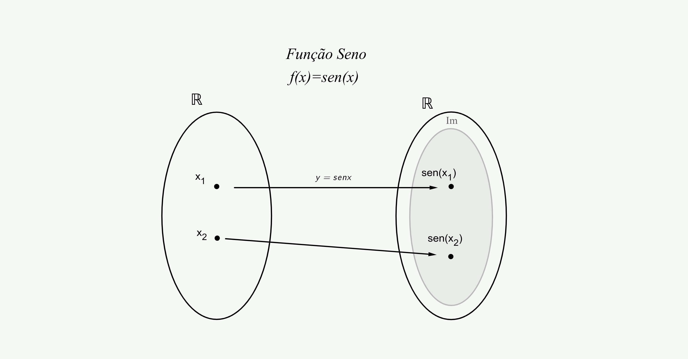

Definição da função seno
A função trigonométrica seno
Dado um número real x, podemos associar a ele o valor do seno de um ângulo (ou arco) de x radianos:

Atenção!
Lembre-se: para cada valor real de x existe sempre um único valor real para seno x.
Já estudamos o processo que permite associar um número real x à medida x de um ângulo (ou arco) para posterior obtenção do valor sen x. Estudamos também como obter os valores de sen x para quaisquer valores x de medidas de ângulos (ou arcos). Lembramos que x, medida de ângulo (ou arco), é expresso em radianos.